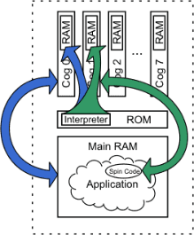

In exercises 1 through 4 we've used just one cog to process the application; it toggles P16 only, then stops and toggles P17 only, then terminates. This is called “serial processing.”
Suppose, however, that we want to do things in parallel; simultaneously toggling pins 16 and 17, each at different rates and for different finite periods. Tasks like this can certainly be done with serial processing and clever programming but it is easier with parallel processing by having the Propeller activate two cogs. Look at the following example and edit your code to match. We added a variable block (VAR) and made a slight change to the Main method.

{{Output.spin
Toggle two pins, one after another simultaneously.}}
VAR long Stack[9] 'Stack space for new cog
PUB Main cognew(Toggle(16, 3_000_000, 10), @Stack) 'Toggle P16 ten times, 1/4 s each Toggle(17, 2_000_000, 20) 'Toggle P17 twenty times, 1/6 s each
PUB Toggle(Pin, Delay, Count)
{{Toggle Pin, Count times with Delay clock cycles in between.}}
dira[Pin]~~ 'Set I/O pin to output direction
repeat Count 'Repeat for Count iterations
!outa[Pin] ' Toggle I/O Pin
waitcnt(Delay + cnt) ' Wait for Delay cycles
In the VAR block we defined an array of longs, Stack, which is 9 elements in length. This is used by the Main method.
We modified the Main method’s first line such that its original code, the call to Toggle, is encased in a COGNEW command. The COGNEW command starts a new cog to run either Spin or Propeller Assembly code. In this case, we entered Toggle(16, 3_000_000, 10), for COGNEW’s first parameter, and @Stack for its second parameter. This means COGNEW will start a new cog to run the Toggle method and will use the memory starting at the address of Stack for run-time stack space. The @ is the Symbol Address operator; it returns the actual address of the variable following it.
To run Spin code, the new cog needs some run-time workspace, called “stack space,” where it can store temporary things like return addresses, return values, intermediate expression values, etc. We chose to reserve 9 longs of space (36 bytes), and passed the address of that space as COGNEW’s second parameter, @Stack. How much stack space is needed? It varies depending on the Spin code being executed, but we’ll discuss those details later. For now, rest assured that 9 longs of space is enough for our Toggle method.
Compile and download Output.spin. You should see that the LEDs on P16 and P17 now simultaneously blink at different rates, 5 times and 10 times, respectively. This is because we now have two cogs running simultaneously; one toggles P16 while the other toggles P17.
Here’s how it works: Cog 0 starts executing our application’s Main method. The first line of Main uses the COGNEW command to activate a new cog (Cog 1) to run the Toggle method with the parameters (16, 3_000_000, 10) passed to it. While Cog 1 is starting up, Cog 0 continues on with the second line of the Main method, the direct call to Toggle with the parameters (17, 2_000_000, 20) passed to it. Ultimately, Cog 0 is left executing Toggle on P17 while Cog 1 executes Toggle on P16, simultaneously. When their individual tasks have expired, they each terminate due to lack of code. Cog 1 terminates the moment it finishes Toggle. Cog 0 finishes Toggle, returns to Main and then terminates. Cog 1 happens to terminate earlier than Cog 0 in this case.
The Propeller loads the Spin Interpreter into Cog 0 to execute the application (the two leftmost arrows in the figure). Then the application requests a new cog to activate, via the COGNEW command, which causes the Propeller to load the Spin Interpreter into the next available cog, Cog 1, to execute a smaller portion of Spin code from the application, the Toggle method (the two rightmost arrows in the figure). Each cog executes its code completely independently of the other; true parallel processing. Note that towards the end of the application both cogs are executing the same piece of Spin code, the Toggle method, but each is using its own workspace and its own values for Pin, Delay and Count.

Two Cogs Running Output Application and Toggle method.
Notice that the Spin Interpreter is loaded into each Cog’s RAM. The Spin Application, Output, resides in Main RAM interpreted by Cog 0 and it launches Cog 1 to run just the Toggle method.
Propeller Help Version 1.2
Copyright © Parallax Inc., dba Parallax Semiconductor
6/17/2011